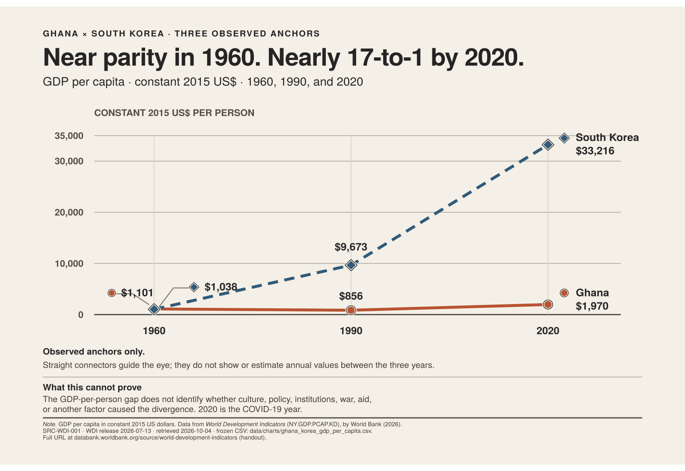
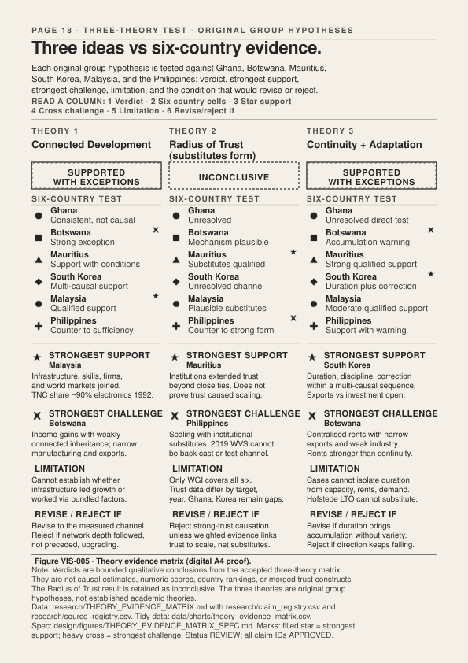

| Verb | What it means here |
|---|---|
| Observe | Record what the six economies looked like at 1960, 1990 and 2020 using one harmonised dataset. |
| Predict | Write what each hypothesis would need to see if it were true. |
| Test | Compare against six cases, not two blocs; register supports and challenges. |
| Revise | Narrow, broaden, or reject the hypothesis based on what the evidence allows. |
| 1 | Cover |
| 2 | The question & the route |
| 3–4 | 1960 baseline · divergence |
| 5–9 | Colonial inheritance |
| 10–13 | The Asian turn & the Ghana / Korea pair |
| 14–17 | Culture, trust, authority — in context |
| 18–22 | Three hypotheses · the counterexamples |
| 23–25 | Synthesis · what travels · sources |
| Common claim | What the evidence shows | What it cannot be used for |
|---|---|---|
| “Indirect rule” was uniform in British Africa. | A single chief appears in only 17% of coded British colonial units; councils, elders and multiple chiefs are more common (Bolt, Gardner, Kohler, Paine & Robinson, 2025). | Treating “indirect rule” as one institution or inferring Ghana’s or Botswana’s post-1960 trajectory from the label alone. |
| British and French public finance diverged sharply. | Both relied heavily on customs revenue; late-colonial per-capita spending rose in both; education expenditure patterns differed somewhat but not as sharply as narratives claim (Cogneau, Dupraz & Mesplé-Somps, 2018). | A single empire-level fiscal story. Nothing causal about post-independence growth paths follows. |
| French West Africa was uniformly under-invested. | District-level investment varied sharply and left persistent local associations with later outcomes (Huillery, 2009). | Treating an empire as an undifferentiated whole. |
| Japanese colonial rule built Korea’s developmental state. | Contested. Kohli (1994) stresses institutional continuity; Haggard, Kang & Moon (1997) stress disruption from division, war, land reform and post-1961 change. | “Japan created Korea’s miracle.” Independence was not continuous rule. |
| The Philippines inherited reformable institutions from the US period. | Formal institutions expanded alongside elite land concentration (Dolan, 1993, pending clean archival copy). | Reading post-1946 outcomes as a straightforward colonial legacy; many later policy choices were decisive. |
| Mauritius inherited a single colonial system. | Successive French and British layers, with indentured labour from India from the 1830s onwards (Mauritius National Archives Department, n.d.; UNESCO WHC, 2006, Aapravasi Ghat). | Collapsing Mauritius into either “French” or “British.” Later diversification is multi-source. |
Colonial government of the Gold Coast. Construction was state-led, not private-settler. Chinese and local labour were employed on segments.
Colonial government department (not a private railway company). Operating authority passed to Ghana at independence; corporate form evolved.
Open gold-mining districts (Tarkwa, Obuasi); link administration (Kumasi); carry cocoa to coast once production grew. Not a passenger-first system.
Served cocoa expansion; raised nearby population density; left persistent locational effects (Jedwab & Moradi, 2012) — not a universal welfare uplift.
Outcome: accommodation. The 1919 revision brought the Dagomba cultural area together under one administrative unit, aligning it with a pre-existing political frontier.
Adapted from Paine, Qiu & Ricart-Huguet (2025), Figure 7d. CC BY 4.0. Reconstructed to the article’s stated extents; shaded cultural area is approximate.
Outcome: partition. The same postwar demarcation left the Ewe cultural area split between British and French administrations.
Dashed outline marks reconstructed Ewe extent; the authors flag the delineation as approximate and this schematic preserves that caveat.
Universal basic literacy and numeracy before advanced schools. Later supply curve of skilled workers.
Credit tied to export performance; firm-level discipline; sequence of upgrading sectors.
Reach markets, run factories, light homes. Expensive, slow, politically visible.
Lower mortality and raise rural productivity before people move into cities.
Courts, land registration, border administration. Hard to measure, easy to erode.
The quiet machinery that makes every other box legible. Hard to brand.
| Case | Anchor | Value & source | What it establishes · what it does not |
|---|---|---|---|
| Ghana | 1959–62 | Cocoa + products ≈60% of export income (Government of Ghana, 1964, p. 224). | Establishes commodity dependence at independence. Does not fix exact 1960/1990/2020 product shares. |
| South Korea | 1960 | Primary 86.3% / manufactures 13.7% of US$32.8m exports (Kim, 1971, Table 1). | Shows how commodity-heavy Korea’s 1960 exports were. Does not identify a cause of what followed. |
| Mauritius | 1970 → 1996 | Sugar 86% → 24% of merchandise exports (World Bank, 1997). | Shows a specific merchandise diversification. Tourism and finance (now larger) are not merchandise. |
| Botswana | 1990 vs 2020 | Diamonds 78.8% (IMF, 1998) vs 88.2% (Statistics Botswana, 2021). | Shows diamond dominance both years. Classifications differ — do not connect as a trend. |
| Malaysia | 1990 | Manufactures 58.8% of exports; crude petroleum 13.4% (IMF, 1999, Table IV.3). | Shows manufactured-export emergence. By 1992, almost 90% of electronic products were made by multinational affiliates (World Bank, 2020, Box 2). |
| Philippines | 2020 | Electronic products 58.2% of merchandise exports (PSA, 2021). | Shows large electronics share. Does not show firm-level deepening; multinational-led assembly matters. |
Land reform (1949–50) redistributes large holdings. US aid pays for food, textbooks, roads. Basic education expands. GDP per capita in 1960: US$1,038.
World Bank (1993) pp. 127–130; Haggard, Kang & Moon (1997).
Credit allocated against export targets; firm-level performance measured; infrastructure extended. Primary exports still dominate (86.3% in 1960; Kim, 1971) but shift.
Kim (1971); World Bank (1993) pp. 20–26.
Heavy & chemical industries subsidised; rural electrification completed by 1979. Mistakes build up; 1980s adjustment prunes overcapacity. 1990 income: US$9,673.
World Bank (1993) pp. 159–161.
Manufacturing share peaks (29.0% in 2011; still 25.7% in 2020). WGI Rule of Law 1.16 (2020). 2020 income US$33,216 — 16.86× Ghana’s.
WDI (2026); WGI (2026).

| Dimension | Why it is testable here |
|---|---|
| Power distance (PDI) | Plausibly linked to coordination, trust across hierarchy, and legitimacy. |
| Individualism / collectivism (IDV) | Plausibly linked to firm scale, labour mobility, close-network trust. |
| Long-term orientation (LTO) | Plausibly linked to savings, patient investment, and firm learning cycles. |
| Dimension | Why not here |
|---|---|
| Uncertainty avoidance (UAI) | Not a measure of risk aversion (Hofstede, 2011, pp. 9–10). Mechanisms to GDP not established in the registered evidence. |
| Masculinity / femininity (MAS) | Terminology aside, mechanisms to macro outcomes are not supported in approved claims. |
| Indulgence / restraint (IVR) | Treated as context, not a cause. |
| Country | PDI | IDV | LTO | UAI | MAS | IVR |
|---|---|---|---|---|---|---|
| Ghana | — | — | 4 | — | — | 72 |
| Botswana | No country row in official matrix. | |||||
| Mauritius | No country row in official matrix. | |||||
| South Korea | 60 | 18 | 100 | 85 | 39 | 29 |
| Malaysia | 100 | 26 | 41 | 36 | 50 | 57 |
| Philippines | 94 | 32 | 27 | 44 | 64 | 42 |
Choose only one. There is no correct answer. Your choice is read as a position, not an identity.
Static form of the group discussion GAME-002 (deferred). Running the live poll requires a platform/operator/time/ethics plan, a sample-size disclosure, and the explicit note that the result is a classroom reading — not a population estimate.
Not a measure of risk aversion (Hofstede, 2011, pp. 9–10). No matched mechanism to development outcomes is registered in the approved claims.
Terminology aside, the registered evidence does not link country MAS scores to macro development outcomes.
Retained as context on p. 14 definitions strip. Not used as a causal mechanism in this project.

Many short, redundant links between firms, suppliers, workers and markets. Learning accumulates. Shocks spread through alternatives.
Dense value at one node (a mine, a port, a multinational assembly line). High export share possible with limited domestic learning.
| Case | Verdict | Why |
|---|---|---|
| Malaysia | Strongest support | Deep multinational-assembly networks with gradual domestic deepening (World Bank 2020). |
| Botswana | Strongest challenge | Fast income growth without inherited infrastructure or deep productive networks. |
| Philippines | Counterexample to sufficiency | Large electronics exports; shallow domestic linkages (Nasution 2000). |
| South Korea | Support with alternatives | Deep networks exist, but policy / aid / security also plausibly explain upgrading. |
| Mauritius | Support with conditions | EPZ built new networks — but tourism and finance expanded on different infrastructure. |
| Ghana | Consistent, non-causal | Reallocation out of agriculture without manufacturing deepening is consistent with the theory but does not identify a cause. |
| Rung | Example source | Can we use it to compare six cases? |
|---|---|---|
| 1 · Direct trust (generalised) | WVS Q57 wording — but samples differ, years differ, four of six absent or sparse | NO — no common chart permitted |
| 2 · Named-institution trust | Afrobarometer / Ipsos / local surveys for 2019–2021 | Only as narrative, target by target |
| 3 · Institutional substitutes | Business associations, EPZ authorities, courts | Yes — but with care; qualitative only |
| 4 · Governance perceptions (WGI) | World Bank 2026 WGI release | Yes for 2020, with 90% CIs — not as “trust” |
| 5 · Survey-response effects | OECD (2017) | Cannot compare across cases |
Breaks: “African culture blocked growth.” Independence 1966 with 22 university graduates. Diamonds, prudence, public investment — not manufacturing deepening. GDP per capita 2020: US$6,254 (COVID year).
Breaks: “Africa cannot diversify out of commodities.” Sugar → EPZ textiles → tourism → finance. GDP per capita 2020: US$9,534. WGI Rule of Law 0.95.
Breaks: “One Asian model.” Industrialised through multinational-led electronics; by 1992, ~90% of electronic products were made by TNC affiliates (World Bank, 2020).
Breaks: “Asia equals growth.” Only ≈2.85× in 60 years. Electronic products 58.2% of 2020 merchandise exports — without matching Korea-style deepening (Nasution, 2000).
Beugelsdijk, S., & Welzel, C. (2018). Dimensions and dynamics of national culture: Synthesizing Hofstede with Inglehart. Journal of Cross-Cultural Psychology, 49(10), 1469–1505.
Bolt, J., Gardner, L., Kohler, J., Paine, J., & Robinson, J. A. (2025). Councils and indirect rule in British Africa (NBER Working Paper No. 30582). National Bureau of Economic Research.
Brewer, P., & Venaik, S. (2014). The ecological fallacy in national culture research. Organization Studies, 35(7), 1063–1086.
Cogneau, D., Dupraz, Y., & Mesplé-Somps, S. (2018). African states and development in historical perspective: Colonial public finances in British and French West Africa. Paris School of Economics.
Government of Ghana. (1964). Seven-year development plan 1963/64 to 1969/70. Government Printer.
Haggard, S., Kang, D. C., & Moon, C. (1997). Japanese colonialism and Korean development: A critique. World Development, 25(6), 867–881.
Hillbom, E. (2014). Cattle, diamonds and institutions: Main drivers of Botswana’s economic development, 1850 to present. Journal of International Development, 26(2), 155–176. [SRC-HILLBOM14-001 · PARTIAL]
Hofstede, G. (2011). Dimensionalizing cultures: The Hofstede model in context. Online Readings in Psychology and Culture, 2(1).
Huillery, E. (2009). History matters: The long-term impact of colonial public investments in French West Africa. American Economic Journal: Applied Economics, 1(2), 176–215.
IMF. (1998). Botswana — Selected issues and statistical appendix (Staff Country Report No. 98/39). International Monetary Fund.
IMF. (1999). Malaysia — Selected issues (Staff Country Report No. 99/86). International Monetary Fund.
Jedwab, R., & Moradi, A. (2012). Colonial investments and long-term development in Africa: Evidence from Ghanaian railways. George Washington University / University of Sussex.
Kim, S. S. (1971). Korea’s export success. Finance & Development, 8(1), 15–20.
Kohli, A. (1994). Where do high growth political economies come from? The Japanese lineage of Korea’s “developmental state.” World Development, 22(9), 1269–1293.
Maipose, G. S. (2008). Policy and institutional dynamics of sustained development in Botswana (Working Paper No. 35). World Bank Commission on Growth and Development.
McMillan, M., Rodrik, D., & Verduzco-Gallo, Í. (2014). Globalization, structural change, and productivity growth, with an update on Africa. World Development, 63, 11–32.
McSweeney, B. (2002). Hofstede’s model of national cultural differences and their consequences: A triumph of faith — a failure of analysis. Human Relations, 55(1), 89–118.
Michalopoulos, S., & Papaioannou, E. (2016). The long-run effects of the scramble for Africa. American Economic Review, 106(7), 1802–1848.
Nasution, A. (2000). Recent issues in macroeconomic policies in the Philippines. Asian Development Bank.
OECD. (2017). OECD guidelines on measuring trust. OECD Publishing. https://doi.org/10.1787/9789264278219-en
Paine, J., Qiu, X., & Ricart-Huguet, J. (2025). Endogenous colonial borders: Pre-colonial politics and the Scramble for Africa. American Political Science Review, 119(1). CC BY 4.0.
PSA — Philippine Statistics Authority. (2021). 2020 external trade statistics. Government of the Philippines.
Rodrik, D. (1995). Getting interventions right: How South Korea and Taiwan grew rich (NBER Working Paper No. 4964). [SRC-RODRIK95-001 · PARTIAL]
Statistics Botswana. (2021). International merchandise trade statistics — December 2020.
Svirydzenka, K., & Petri, M. (2014). Mauritius: The drivers of growth — can the past be extended? (IMF Working Paper No. 14/134). International Monetary Fund.
World Bank. (1980). World Development Report 1980. Oxford University Press.
World Bank. (1985). Ghana — industrial policy, performance and recovery (Report No. 5716-GH).
World Bank. (1993). The East Asian miracle: Economic growth and public policy. Oxford University Press.
World Bank. (1997). Mauritius country assistance strategy.
World Bank. (2020). Structural transformation and labor market performance in Ghana.
World Bank. (2023). Botswana systematic country diagnostic update.
World Bank. (2026). World Development Indicators [Data set]. Retrieved October 6, 2026, from https://data.worldbank.org/
World Bank. (2026). Worldwide Governance Indicators [Data set].
WVS Association. (2024). World Values Survey — Wave 7, Philippines, variable Q57.
Note. Full source registry: research/source_registry.csv (97 unique sources). Claim registry: research/claim_registry.csv (292 claims). [CITATION TO BE COMPLETED FROM APPROVED SOURCE REGISTRY] remains the convention for any pending-attribution items in draft copy.
Ghana — Tema Port from a nearby beach. JulianGrayscales / Wikimedia Commons, 8 Feb 2020. CC BY-SA 4.0. ASSET-PH-GHA-TEMA-001.
Ghana — Market activity, Accra. Amuzujoe / Wikimedia Commons, 27 Nov 2020. CC BY-SA 4.0. ASSET-PH-GHA-ACCRA-001.
Botswana — Gaborone Bus Rank. Sarvesh Lutchmun / Wikimedia Commons, 6 Aug 2015. CC BY-SA 4.0. ASSET-PH-BWA-GABORONE-001.
Botswana — Solar-powered pumping, Mochudi. Paul tk / Wikimedia Commons, 14 Sep 2018. CC BY-SA 4.0. ASSET-PH-BWA-MOCHUDI-001.
Mauritius — Central Market, Port Louis. Didier Baertschiger / Wikimedia Commons, 9 Mar 2015. CC BY-SA 2.0. ASSET-PH-MUS-MARKET-001.
Mauritius — Bulk Sugar Terminal Quay, Port Louis. Richard N Horne / Wikimedia Commons, 3 Apr 2025. CC BY 4.0. ASSET-PH-MUS-SUGAR-001.
South Korea — Busan harbour. Svwmal / Wikimedia Commons, 8 Apr 2012. CC BY-SA 3.0. ASSET-PH-KOR-BUSAN-001.
South Korea — Gyeongdong Market, Seoul. Gaël Chardon / Wikimedia Commons, 21 Apr 2008. CC BY-SA 2.0. ASSET-PH-KOR-GYEONGDONG-001.
Malaysia — Perai Free Industrial Zone, Penang. HundenvonPenang / Wikimedia Commons, 27 Jan 2024. CC BY-SA 4.0. ASSET-PH-MYS-PERAI-001.
Malaysia — Port Klang containers. jgmorard / Wikimedia Commons, 1 Mar 2009. CC BY 2.0. ASSET-PH-MYS-PORTKLANG-001.
Philippines — Port of Manila. Theurbanhistorian / Wikimedia Commons, 18 Jul 2009. CC BY-SA 3.0. ASSET-PH-PHL-MANILAPORT-001.
Philippines — Dampa Seaside Market, Metro Manila. george ruiz / Wikimedia Commons, 4 Jan 2013. CC BY 2.0. ASSET-PH-PHL-DAMPA-001.
Historical / cartographic: Linde & Wagner & Debes (1914), Africa. Library of Congress item 2021668660. “Free to use and reuse.” MAP-001 blocked pending verified raster derivative. Paine, Qiu & Ricart-Huguet (2025) Figure 7d — CC BY 4.0 — reconstructed in schematic form on page 8.
Africa & Asia: Why Did Their Economic Paths Diverge? — Issue 01, 2026. An investigative editorial journal produced for USIL coursework, with the Evidence Ledger comparison system. Typeface: Montserrat (Julieta Ulanovsky; SIL OFL 1.1). Palette: Palette A (locked 2026-10-07). Build command on page QA report: see drafts/claude-opus-magazine/HANDOFF.md.
Production status: Complete editorial draft. Final evidence, image-rights, physical A4 and classroom-readability checks remain pending.
Open gates (not yet passed): MAP-001 (verified LoC raster); VIS-004 (physical A4 proof, back-row five-second test, human colour-vision review, final-typography review); independent numeric check for every final figure; final six-country export-composition narrative; final in-text APA citations throughout page copy; full APA 7 bibliography beyond this selected list; GAME-001 / GAME-002 live interactions.
Build: Google Chrome --headless --print-to-pdf on drafts/claude-opus-magazine/source/magazine.html. Figures: five approved SVGs in source/assets/figures/, copied unchanged from design/figures/.